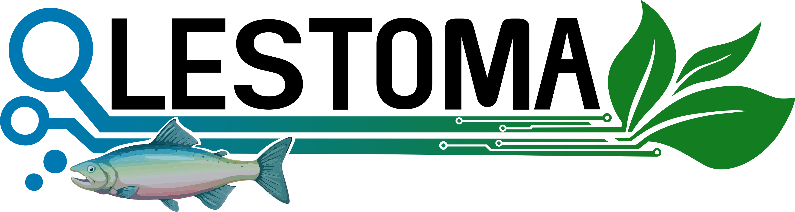

<app-notifications *ngIf="modal"></app-notifications>

<head>
    <meta charset="UTF-8">
    <meta http-equiv="X-UA-Compatible" content="IE=edge">
    <meta name="viewport" content="width=device-width, initial-scale=1.0">
    <script src="https://kit.fontawesome.com/fc0398356f.js" crossorigin="anonymous"></script>
    <script type="text/javascript" src="../../../assets/javascript/menu.js"></script>
    <link rel="preconnect" href="https://fonts.googleapis.com">
    <link rel="preconnect" href="https://fonts.gstatic.com" crossorigin>
    <link
        href="https://fonts.googleapis.com/css2?family=Montserrat&family=Open+Sans&family=Poppins&family=Roboto&family=Roboto+Slab&display=swap"
        rel="stylesheet">
    <title>Fishweb</title>
</head>
<nav class="menu">
    <!-- RouterActive puede ser de utilidad: revisar-->
    <form (ngSubmit)="logout()" class="menu">
        
        <label class="logo">Fishweb</label>

        <div [ngSwitch]="rol_user">
            <ul class="menu_items" *ngSwitchCase='1'>
<!--                 <li><a routerLink="/inicio-super-administrador">Monitoreo de variables</a></li> -->
                <li><a routerLink="/crear-upa" title="Crear una nueva UPA y visualizar las UPAs y su información">UPAs</a></li>
                <li><a routerLink="/registro" title="Registrar usuarios (Administrador, Auxiliar)">Registro usuarios</a></li>
                <!-- <li><a routerLink="/ajuste-variables">Ajuste de variables</a></li>
                <li><a routerLink="/controlar">Control</a></li> -->
                <li><a routerLink="/reportes" title="Creación de los reportes y grafica">Reportes</a></li>
                <li><a routerLink="/perfil" title="Visualización de mensajes">Ver perfil</a></li>
                <li><button class="button_logout" type="submit">Cerrar sesión</button></li>
            </ul>
            <ul class="menu_items" *ngSwitchCase='2'>
                <li><a routerLink="/inicio-administrador" title="Tabla en donde se observan los valores de la UPA">Monitoreo de variables</a></li>
                <li><a routerLink="/ajuste-variables" title="Configuración de la sensorica">Ajuste de variables</a></li>
                <li><a routerLink="/controlar" title="Configuración de los actuadores">Control</a></li>
                <li><a routerLink="/reportes" title="Creación de los reportes y grafica">Reportes</a></li>
                <li><a routerLink="/mensajes" title="Visualización de mensajes">Mensajes</a></li>
                <li><a routerLink="/ajustes" title="Ajuste de sensores y controladores">Ajustes</a></li>
                <li><a routerLink="/perfil">Ver perfil</a></li>
                <li><button class="button_logout" type="submit">Cerrar sesión</button></li>
            </ul>
            <ul class="menu_items" *ngSwitchCase='3'>
                <li><a routerLink="/inicio-auxiliar" title="Tabla en donde se observan los valores de la UPA">Monitoreo de variables</a></li>
                <li><a routerLink="/reportes" title="Creación de los reportes y grafica">Reportes</a></li>
                <li><a routerLink="/mensaje" title="Visualización de mensajes">Mensajes</a></li>
                <li><a routerLink="/perfil">Ver perfil</a></li>
                <li><button class="button_logout" type="submit">Cerrar sesión</button></li>
            </ul>
        </div>
        <span class="btn_menu">
            <i class="fa fa-bars"></i>
        </span>
    </form>
</nav>
